For this part, I had to calibrate my camera using ArUco tags. I printed out the calibration grid and took around 30-50 images from different angles and distances, making sure to keep the zoom level constant throughout. The key was to vary the angle and distance of the camera relative to the tags, similar to how chessboard calibration works.
I wrote a script that loops through all the calibration images. For each image, I used OpenCV's ArUco detector (cv2.aruco.ArucoDetector) with DICT_4X4_50 dictionary to detect the tags. The detector returns corners and IDs for each detected tag. I extracted the corner coordinates from the first detected tag in each image and stored them along with the corresponding 3D world coordinates.
For the 3D world coordinates, I defined the four corners of a tag relative to the tag's coordinate system. I used a tag size of 0.06 meters, so the corners were at [(0,0,0), (0.06,0,0), (0.06,0.06,0), (0,0.06,0)] in meters, with the tag lying flat on the z=0 plane. I collected all these correspondences and passed them to cv2.calibrateCamera() to compute the camera intrinsics matrix K and distortion coefficients.
One important thing I had to handle was cases where tags weren't detected in some images - this happens pretty often. I added checks to skip images where no tags were detected rather than letting the script crash. The calibration ended up with a reprojection error of about 2.78 pixels, which seemed reasonable. The camera matrix K had focal lengths around 2700 pixels and principal point around (1622, 2139).
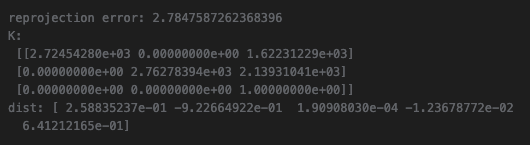
I picked a Nintendo Switch as my object to scan. I printed out a single ArUco tag (generated from an online ArUco generator) and placed it next to the Switch on a table. I made sure to leave a white border around the tag so detection would work properly. Then I captured 55 images from different angles, making sure to use the same camera and zoom level as during calibration.
I tried to follow the capture tips: keeping the distance consistent (about 10-20cm away so the object fills about 50% of the frame), avoiding brightness and exposure changes, avoiding blurry images, and capturing from varying angles both horizontally and vertically. The tag size for the object scan was 0.1 meters, which was larger than the calibration tags.
Some challenges I ran into were making sure the lighting stayed consistent across all images and avoiding motion blur. I also had to be careful about the angle - if I tilted the camera too much, the tag detection would sometimes fail. I ended up with 55 valid images where the tag was successfully detected.
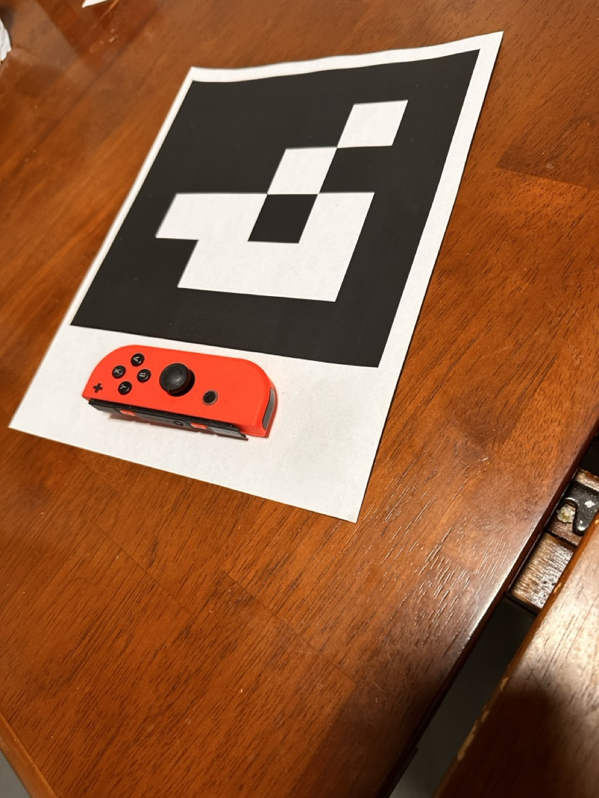
After calibrating the camera, I used the intrinsic parameters to estimate the camera pose for each image using cv2.solvePnP(). This solves the Perspective-n-Point (PnP) problem - given a set of 3D points in world coordinates and their corresponding 2D projections in an image, we want to find the camera's extrinsic parameters (rotation and translation).
For each image in my object scan, I detected the single ArUco tag and extracted its corner coordinates. I used the same 3D world coordinates as before (the four corners of the tag in its coordinate system). Then I called cv2.solvePnP() with the object points (3D), image points (2D), camera matrix K, and distortion coefficients.
solvePnP returns a rotation vector (rvec) and translation vector (tvec). I converted the rotation vector to a rotation matrix using cv2.Rodrigues(). The rotation and translation together form the world-to-camera transformation matrix. However, for NeRF we need the camera-to-world (c2w) matrix, so I inverted the world-to-camera transformation to get c2w.
I used viser to visualize the camera frustums and verify that the poses looked reasonable. The visualization shows all the cameras positioned around the object, which helps verify that the pose estimation worked correctly. Here are two screenshots showing the camera cloud from different viewpoints:
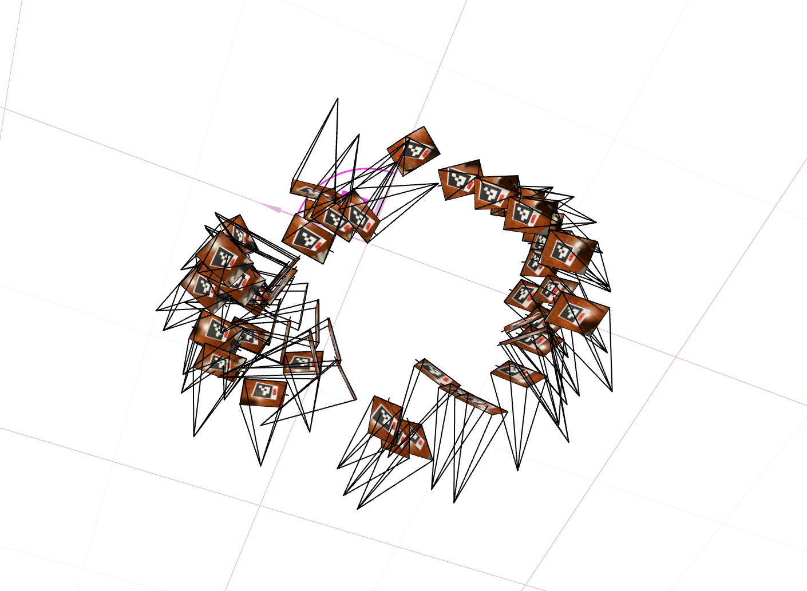
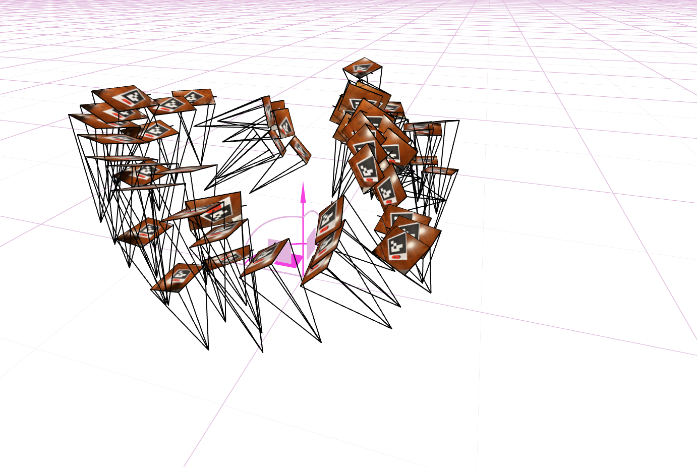
I used cv2.undistort() to remove lens distortion from all the images, since NeRF assumes a perfect pinhole camera model without distortion. I also used cv2.getOptimalNewCameraMatrix() to handle black boundaries that appeared after undistortion. This function computes a new camera matrix that crops out invalid pixels, and returns both the new intrinsics matrix and a region of interest (ROI).
I cropped the undistorted images to the ROI to remove the black borders. However, when you crop an image, the coordinate system origin shifts, so I had to update the principal point in the intrinsics matrix to account for the crop offset. I subtracted the x and y offsets from cx and cy respectively.
After undistorting all images, I split them into training (80%), validation (10%), and test (10%) sets using a random permutation with a fixed seed for reproducibility. Then I packaged everything into a .npz file with the required keys: images_train, c2ws_train, images_val, c2ws_val, c2ws_test, and focal. The images are stored in 0-255 range and will be normalized to 0-1 when loaded during training.
Here's a comparison showing the original images vs the undistorted images:
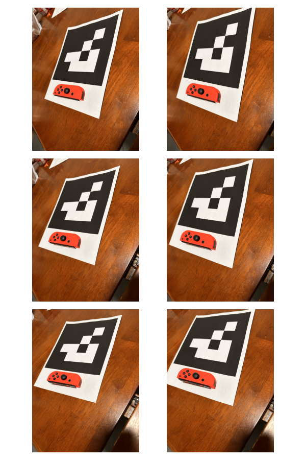
Before jumping into 3D NeRF, I started with a simpler 2D task - using a neural field to represent a 2D image. This is basically a function that takes pixel coordinates (u, v) and outputs RGB colors. Since there's no concept of radiance in 2D, it's just a neural field rather than a radiance field.
I implemented an MLP (Multilayer Perceptron) with sinusoidal positional encoding. The network takes 2D pixel coordinates as input and outputs 3D RGB colors. The positional encoding expands the input dimensionality by applying sinusoidal functions at different frequency levels. For a 2D coordinate, with L=10 frequency levels, I create a 42-dimensional vector: the original 2D coordinate plus sin and cos terms for each frequency level from $2^0\pi$ to $2^{L-1}\pi$.
The MLP architecture has 4 layers: three hidden layers with ReLU activations, and a final output layer with Sigmoid activation to constrain the output to (0, 1) range. I normalize both the input coordinates (dividing by image width/height) and the ground truth colors (dividing by 255) to be in [0, 1] range.
For the dataloader, I randomly sample N pixels at each iteration since training on all pixels at once would be too memory-intensive. I use a batch size of 10,000 pixels per iteration. The dataloader returns normalized coordinates and normalized colors.
I used MSE loss between predicted and ground truth colors, and trained with Adam optimizer at learning rate 1e-2. I ran training for 2000-3000 iterations. I also computed PSNR (Peak Signal-to-Noise Ratio) as a metric to measure reconstruction quality, using the formula $PSNR = 10 \cdot \log_{10}(1/MSE)$.
I did extensive hyperparameter tuning, experimenting with different layer widths (from 16 to 1024) and different max frequencies L for positional encoding (from 0 to 14). I found that higher widths and moderate L values (around 8-12) gave the best results. Very low L values (like 0 or 2) resulted in poor reconstruction quality, while very high L values (14+) sometimes led to overfitting or didn't improve much.
Model Architecture: The final model I used has 4 layers (3 hidden + 1 output), width of 256, positional encoding frequency L=10, learning rate of 1e-2, and batch size of 10,000. The input dimension after PE is 42 (for L=10), and the output is 3 RGB channels.
Training progression on provided test image (coyote):
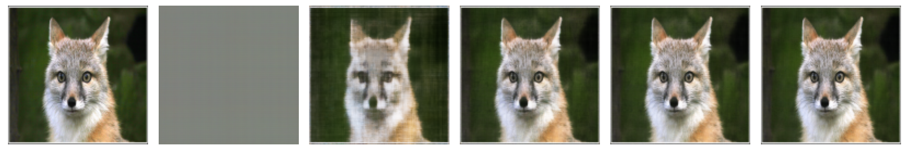
Training progression on my own image:
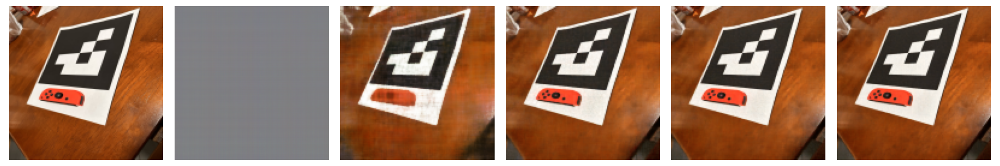
Final results for different hyperparameters (2x2 grid):
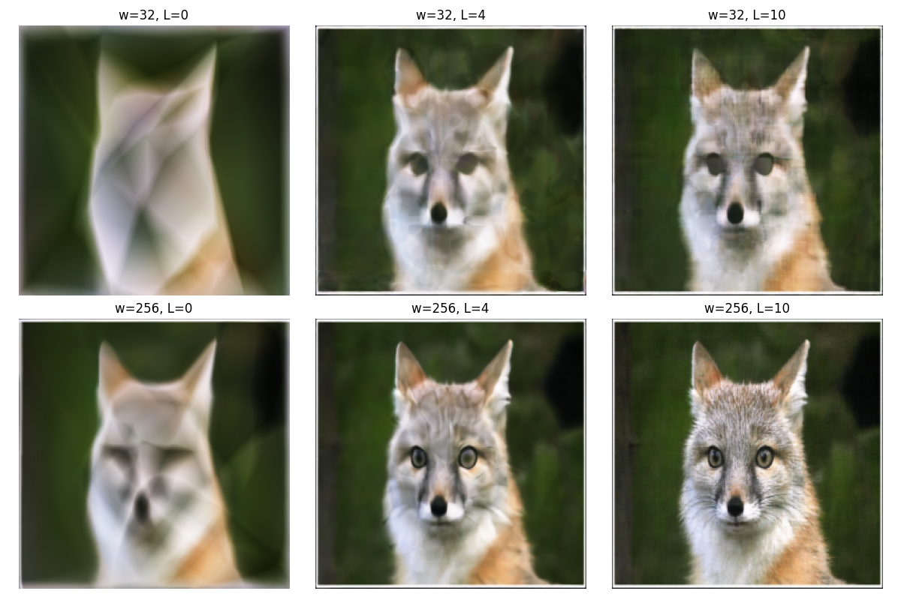
PSNR curve:
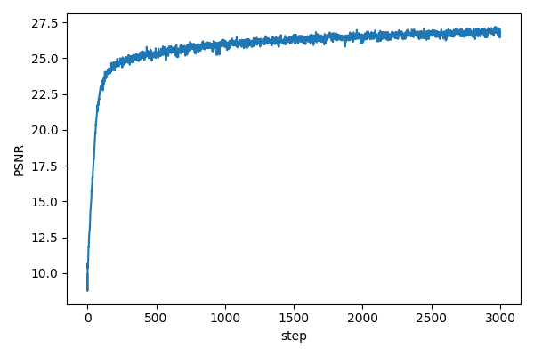
Now I moved on to the full 3D NeRF task using the Lego dataset. This is more complex because we're representing a 3D scene rather than just a 2D image. The dataset has 100 training images, 10 validation images, and 60 test camera poses for novel view rendering. All images are 200x200 pixels.
I implemented functions to create rays from camera parameters. For each pixel in an image, I need to compute the ray origin (camera position) and ray direction in world space.
The ray origin is straightforward - it's just the camera position, which is the translation part of the camera-to-world transformation matrix c2w (the first 3 elements of the 4th column).
For the ray direction, I need to transform pixel coordinates to world space. The process is: (1) convert pixel coordinates to normalized device coordinates by subtracting the principal point and dividing by focal length, (2) create a direction vector in camera space pointing from the camera center through the pixel, (3) transform this direction to world space using the rotation part of c2w, and (4) normalize the direction vector.
I implemented this in PyTorch so it can run on GPU. The key functions are pixel_to_camera_torch() which converts pixel coordinates to camera space directions, and transform_torch() which applies the c2w transformation. The pixel_to_ray_torch() function combines these to get both ray origin and direction for a batch of pixels.
I verified this works by creating rays for all pixels in the first training image and checking that the shapes are correct (should be [H, W, 3] for both rays_o and rays_d).
I implemented stratified sampling along each ray. The idea is to divide the ray into intervals between near and far bounds, and sample one point uniformly within each interval. This gives better coverage than uniform sampling.
I create n_samples+1 edges between near and far, then for each interval, I sample a point uniformly within that interval. During training, I add small random perturbations to the sample locations (perturb=True) so that every location along the ray gets touched during training. This helps prevent overfitting. During inference/validation, I disable perturbation and just sample at the midpoint of each interval.
For the Lego dataset, I set near=2.0 and far=6.0, and n_samples=64. The step size is (far - near) / n_samples. I compute the 3D points along each ray using the parametric ray equation: $p(t) = o + t \cdot d$ where o is the ray origin, d is the ray direction, and t is the distance along the ray.
The function returns both the 3D points (shape [N_rays, n_samples, 3]) and the t values (shape [N_rays, n_samples]) which are useful for volume rendering later.
I created a RaysData class that combines everything into a dataloader. The class takes images, camera intrinsics K, and camera-to-world matrices c2ws as input. In the constructor, it precomputes all the rays for all images - for each image, it creates rays for all pixels and stores them along with the corresponding pixel colors.
The sample_rays() method randomly samples N pixels from across all training images and returns the corresponding ray origins, ray directions, and ground truth pixel colors. I also created a RaysDataPerImage variant that samples rays from a single specified image, which is useful for validation.
I used viser to visualize the cameras, rays, and sample points to verify everything was working correctly. The visualization shows the camera frustums, the sampled rays as lines, and the sample points along those rays as a point cloud. This helped me catch bugs early - for example, I could see if rays were pointing in the wrong direction or if sample points were outside the expected volume.
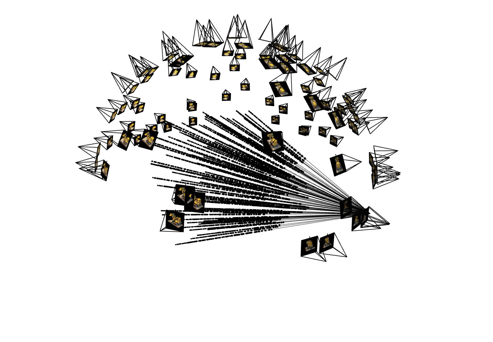
I implemented the NeRF network - an MLP that takes 3D coordinates and view direction as input, and outputs density and color. The network is deeper than the 2D version since we're doing a more challenging 3D task.
The network architecture has several key differences from Part 1: (1) The input is 3D coordinates (xyz) plus view direction (3D vector), (2) The output includes density σ (using ReLU to ensure non-negative) in addition to RGB color (using Sigmoid to constrain to [0,1]), (3) The view direction is encoded with lower frequency positional encoding (L_dir=4) than coordinates (L_xyz=10), since view direction doesn't need as much high-frequency detail, (4) I added a skip connection that concatenates the input (after PE) to the middle of the network - this is a common trick for deep networks to help them not forget about the input.
The network structure is: 4 layers processing the coordinate encoding, then concatenate the coordinate encoding again, then 4 more layers, then split into two branches - one for density (single linear layer) and one for a feature vector. The feature vector is concatenated with the view direction encoding, then passed through a couple more layers to predict RGB color.
I use width=256 for all hidden layers. The coordinate encoding has dimension 63 (for L_xyz=10), and the view direction encoding has dimension 27 (for L_dir=4). The network outputs density (1 value) and RGB (3 values) for each 3D point.
I verified the network works by passing a batch of sample points and directions through it, and checking that the output shapes are correct: sigma should be [N_points, 1] and rgb should be [N_points, 3].
I implemented the volume rendering equation to composite the colors and densities along each ray into a final pixel color. The discrete approximation of the continuous volume rendering integral is:
$\hat{C}(\mathbf{r})=\sum_{i=1}^N T_i\left(1-\exp \left(-\sigma_i \delta_i\right)\right) \mathbf{c}_i$
where $T_i=\exp \left(-\sum_{j=1}^{i-1} \sigma_j \delta_j\right)$ is the transmittance (probability the ray doesn't terminate before sample i), and $1-\exp(-\sigma_i \delta_i)$ is the opacity (probability of terminating at sample i).
I implemented this in PyTorch so gradients can flow through for training. The key steps are: (1) compute the deltas (step sizes) between consecutive samples, (2) compute alphas = 1 - exp(-sigma * deltas), (3) compute transmittance T using cumulative sum of sigma * deltas, (4) compute weights = exp(-T_prev) * alphas, (5) weighted sum of colors using the weights.
I used torch.cumsum to efficiently compute the cumulative transmittance. I also made sure to handle the edge case where T_prev for the first sample should be 0 (no previous samples to accumulate).
I verified the implementation passes the sanity check provided in the spec - it should produce specific output values for a given random seed and input.
For training, I use the rendered colors to compute MSE loss against the ground truth pixel colors. I train with Adam optimizer at learning rate 5e-4, batch size of 10,000 rays per iteration, and 64 samples per ray. I train for 2000 steps, saving checkpoints every 100 steps. I also compute PSNR on both training and validation sets to track progress.
Training progression showing predicted images at different iterations. As you may notice, the predictions are getting better as the iterations progress, however they are already quite good at 500 iterations. I go from 500 to 1000 to 1500 to 2000 iterations:
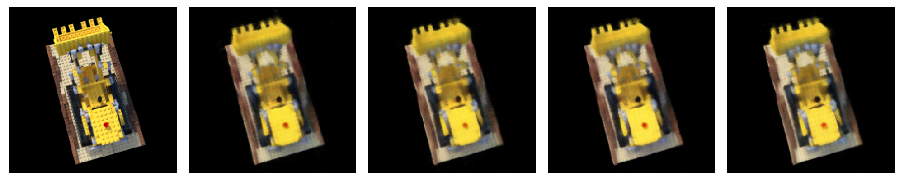
Final Prediction:
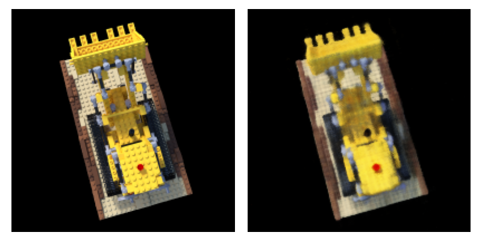
PSNR curve on validation set:
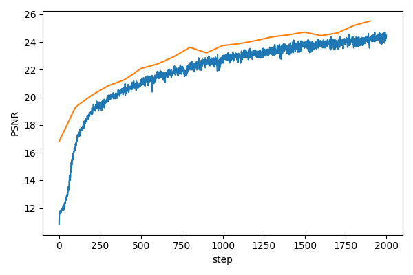
Spherical rendering video of Lego using test camera poses:
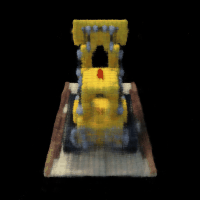
I trained a NeRF on my own Switch dataset from Part 0. This required several adjustments compared to the Lego dataset.
The biggest change was adjusting the near and far bounds. For the Lego dataset, near=2.0 and far=6.0 worked well, but for my real-world data, the object is much closer to the camera. I found that near=0.02 and far=2.0 worked better. I had to experiment a bit to find values that captured the object properly without including too much empty space.
I also had to handle the different image resolution - my images are 1279x959 pixels, which is much larger than the 200x200 Lego images. To make training feasible, I used a different sampling strategy - instead of precomputing all rays, I sample rays on-the-fly from a randomly selected image at each iteration. I also used downsampling during rendering (downsample=8 or 16) to speed things up, though I train on the full resolution.
I used n_samples=32 per ray (instead of 64) to keep training time reasonable, and increased batch size to 20,000 rays. I trained for 5700 steps. The learning rate stayed at 5e-4.
For rendering novel views, I computed a circular camera path around the object. I estimated the center of the object by solving a least-squares problem using the camera positions and directions, then created 60 camera poses in a circle around this center, all looking toward it. This gives a nice orbital view of the object.
GIF of camera circling the Switch:
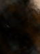
Training loss plot:
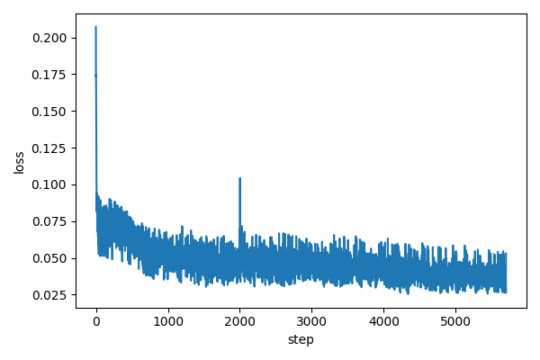
Intermediate renders during training at steps 1000, 2500, and finally the final 5700:
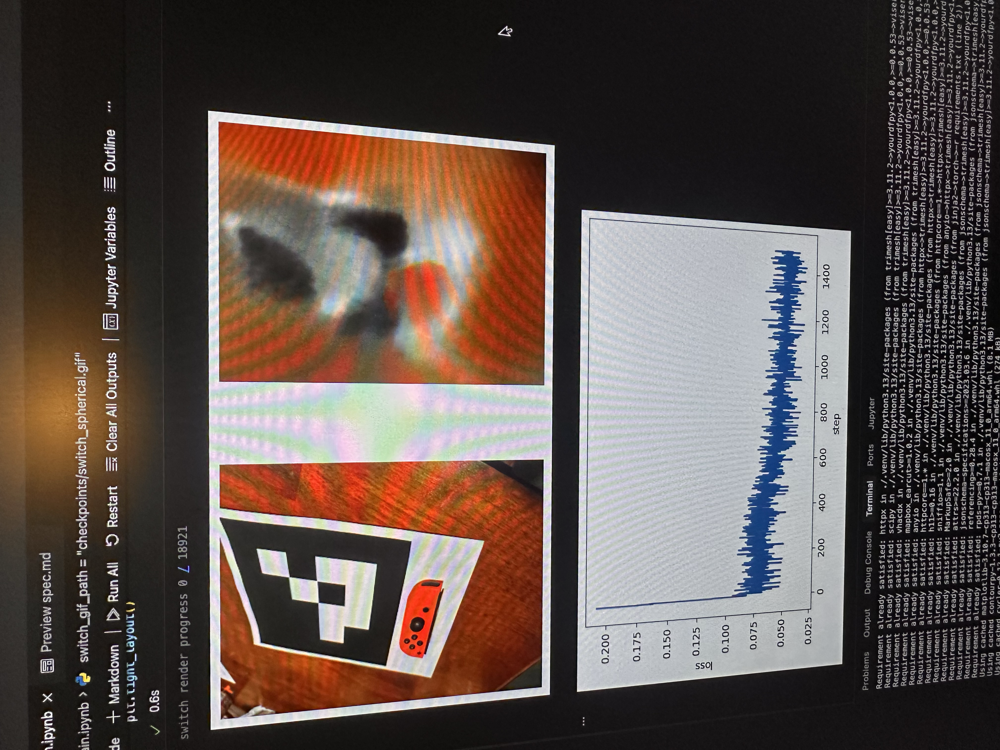
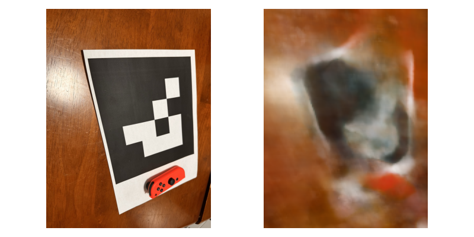
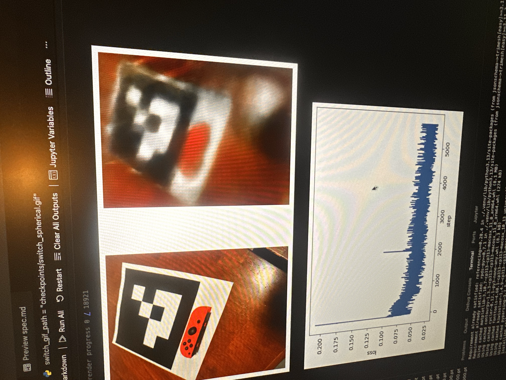
Code/hyperparameter changes: The main changes I made were: (1) near/far bounds changed from (2.0, 6.0) to (0.02, 2.0) to match the scale of my real-world object, (2) n_samples reduced from 64 to 32 to speed up training, (3) batch size increased to 20,000, (4) used on-the-fly ray sampling instead of precomputed rays to handle larger images, (5) added downsampling during rendering for speed, (6) trained for 5700 steps instead of 2000. The network architecture stayed the same, but I had to make sure the intrinsics matrix was correctly updated after image cropping during undistortion.